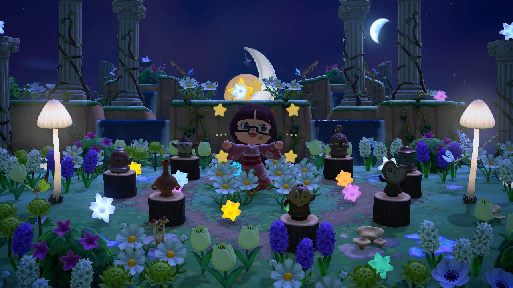

Soy una estudiante de 20 años, originaria de Nuevo León, México, me llamo Lisset García, mejor conocida como Sunny ☀️
Soy egresada de la Escuela Industrial y Preparatoria Técnica Álvaro Obregón, siendo técnica en programación web. Conozco jenguajes como HTML, CSS (aunque no sean considerados lenguajes), Java, Java script, C#, C++, SQL, Python entre otros.
Actualmente estoy estudiando la carrera de Tecnologías de información en la Facultad de Contaduría Pública y Administración, cursando el 5to semestre.
Mis gustos y pasatiempos...
Videojuegos
Mis juegos favoritos son aquellos de novelas graficas (tambien conocidos como otomes), cozy games, uno que otro shooter, juegos desarrollados por equipos pequeños (indie RPG games). Algunos ejemplos de ellos son:
Fortnite
Animal Crossing
Stardew Valley
Genshin
Doki Doki Literature Club
Undertale
Juegos desarrollados por Charon (RPG's)
Ib, Witch's Heart, Hello Charlotte, The gray garden, Waddanohara, entre otros famosos RPG's de horror indie.
Corazón de Melón y Mystic Messenger (Juegos otomes)
Desde que estaba en secundaria empecé jugando RPG's puesto que los requisitos de aquellos juegos no eran muy demandantes para mi computadora, tiempo después empecé a jugar en linea tanto en PC y hace poco en consola. He sido nintendera desde pequeña con mi gameboy, que pasó a una Nintendo 3DS y actualmente tengo una Switch Oled con la que juego Animal Crossing.

Escritura
Si bien me gustan todas las artes y creo he probado la mayoría, hay 2 que me llenan el alma. Desde secundaria he escrito y me ha encantado poder expresarme a travez de historias, me gusta plasmar mis sentimientos en escritos, ultimamente solo he escrito cuando me lo dicta mis sentimientos. Desde que estaba en escuela, cuando mi computadora no tenía internet, buscaba como entretenerme en aquel aparato, jugaba en el programa de mi primera encarta y cuando descubrí el paquete de office, fue algo completamente nuevo para mi. Ahí aparte de empezar mi amor hacia la escritura, comenzó una curiosidad hacia la ofimática, desde ahí me veía un poco en el área de TI. Empecé escribiendo historias sobre personajes, por lo general de romance. Después, los empecé a pulicar en una aplicación, tuvo un poco de fama en la comunidad en la que estaba y le dí fin. Después hice historias en mi libreta, poesía, todas ellas inconclusas.